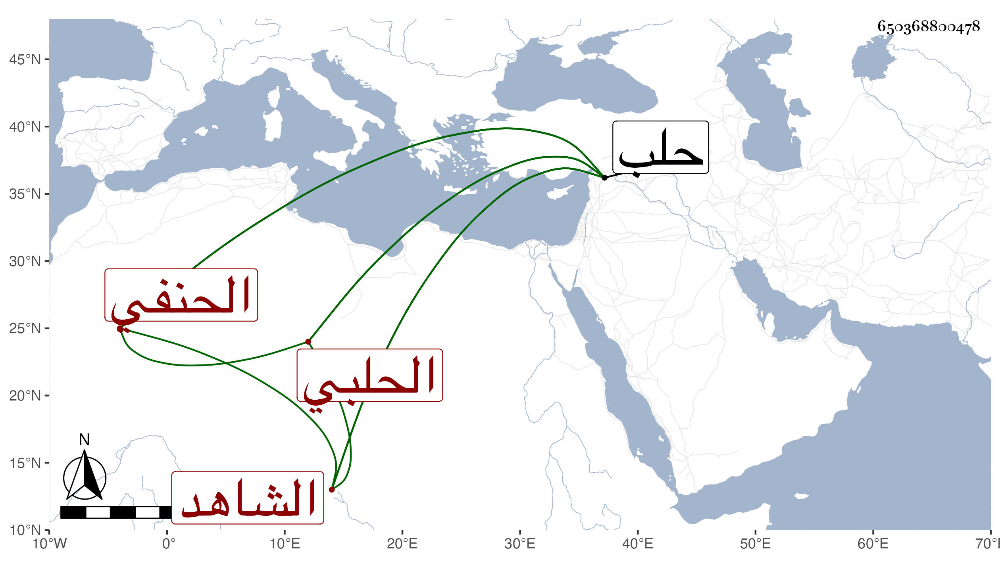

0902Sakhawi.DawLamic.ITO20230111-ara1.EIS1600.650368800478
Biography ID: 650368800478
565
حسين بن علي بن أحمد بن البرهان إبراهيم الحلبي الحنفي الشاهد تحت القلعة منها ويعرف بابن البرهان . ولد في سنة سبعين وسبعمائة بحلب ونشأ بها فحفظ القرآن وكتبا واشتغل وفضل وسمع على ابن صديق بعض الصحيح ، وتكسب بالشهادة بل درس بالسيفية بحلب وقتا ثم نزل عنه ، وحدث وسمع منه الفضلاء ، وكان من بيت علم وخير ولكنه يذكر بلين وتساهل . مات في حدود سنة أربعين بحلب
